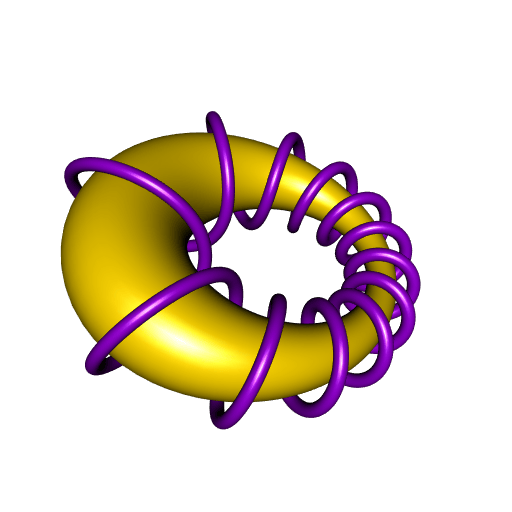
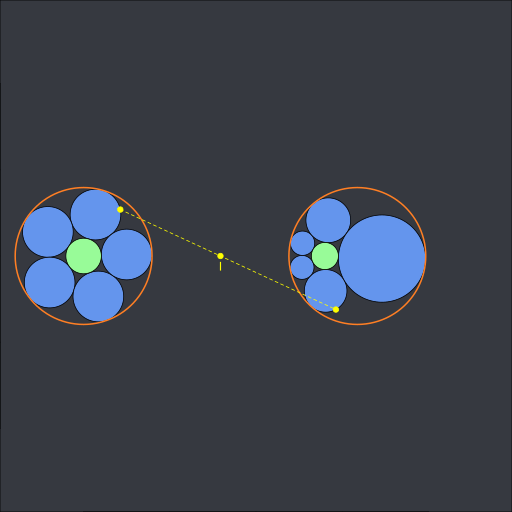
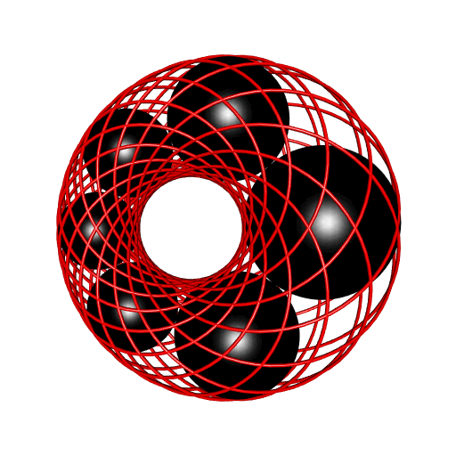
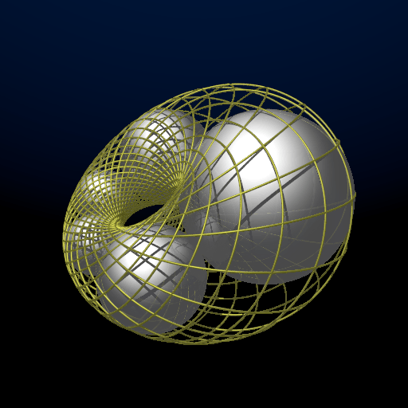

Elliptic cyclide by inversion of a torus
An elliptic Dupin cyclide can be obtained by inversion of a torus with respect to a sphere. In the previous post, I showed a rotoid (an helix) dancing around a cyclide:

I constructed this dancing rotoid in the same way as the dancing rotoid around a torus:

Click here if you want the POV-Ray code for this animation.
Now, what happens if one inverts these two geometrical objects, the torus and the rotoid, with respect to a sphere? The torus will become a cyclide, as previously said, and what will happen for the rotoid? Here is the answer:

The R code for this animation is provided in this gist (if it looks complicated, that’s because I start with the cyclide, and I derive the torus and the inversion which yield this cyclide).
Another nice application of this mathematical fact is the construction of Steiner chains:

(code available in this gist).
The point \(I\) is the center of the circle of inversion. The above animation shows a 2D Steiner chain but we can do the same in 3D. When there are six spheres, this is called a Soddy hexlet. Here is a Soddy hexlet with the Villarceau circles of the cyclide:

The R code which produces this animation is provided in this gist.
I did the same picture with POV-Ray:

Go to this gist if you want the code.
And maybe you remember this previous post, where I show how one can construct nested 3D Steiner chains.